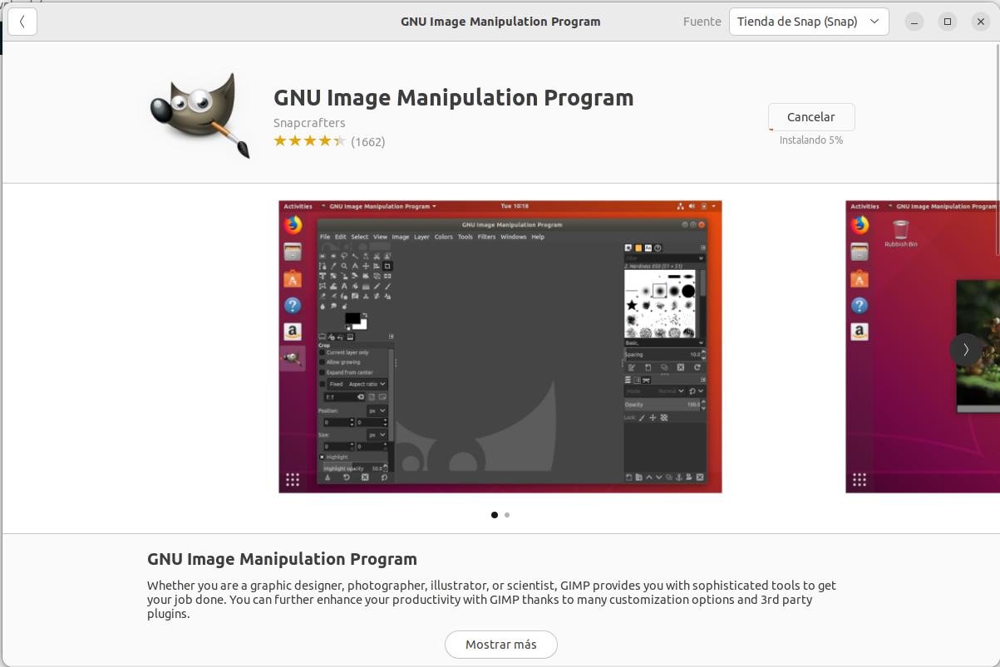
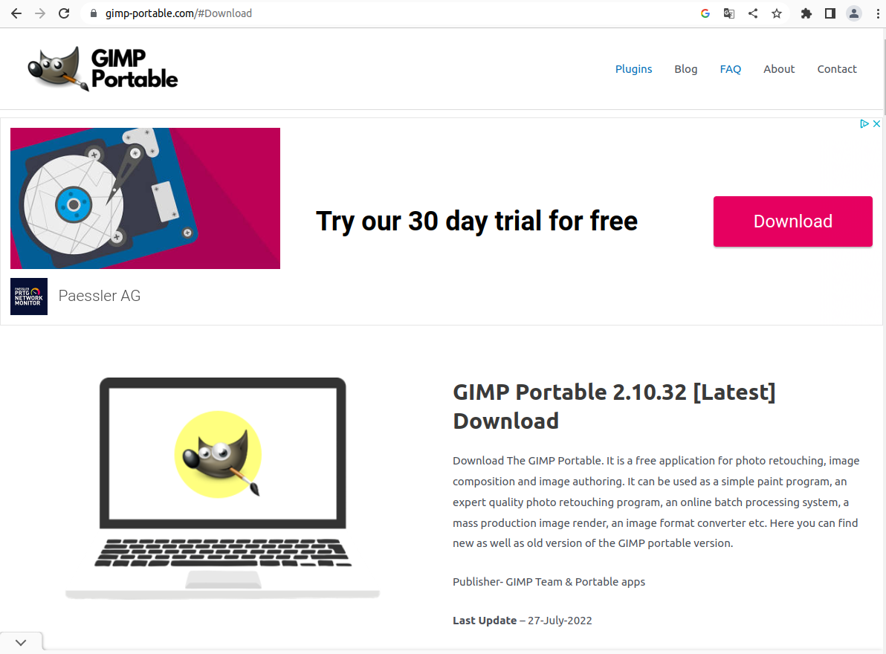

De nuevo, este programa está disponible en el repositorio de ubuntu.
Podemos simplemente proceder de la siguiente manera
Hacemos click en instalar y tendremos el programa listo para editar nuestras fotos.
Para poder tenerlo de forma portable, debemos acceder a la siguiente página.
Descargamos el programa, y copiamos los archivos del programa en nuestro usb o memoria portatil.